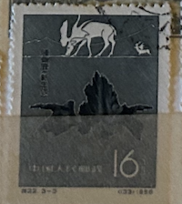
| SOURCE | TITLE| IMAGE MATCH | click to source page |
| CollectorBazar | Life On LAND - Used - China - Animal - NPPA4663 | 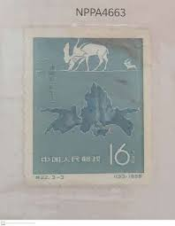 |
| Find Your Stamps Value | Prehistoric animals of China: Choukou-tien sino-megaceros - 中国古生物: 肿骨鹿（新生代） 16f Slate green stamp price, value | 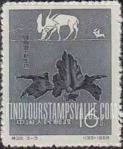 |
| eBay UK | Used Postage 1 Number Chinese Stamps for sale | eBay UK | 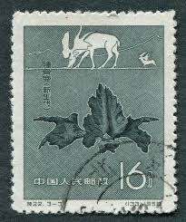 |
| Stamp Community Forum | Thematic : Elephants. - Page 30 - Stamp Community Forum | 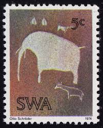 |
| eBay | SOUTHWEST AFRICA Sc # 367-9 CPL MNH SET of 3 - ANCIENT ROCK CARVINGS | eBay | 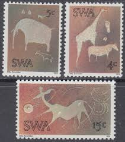 |
| Paleophilatelie | Paleophilatelie.eu - China 1958 | 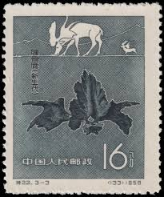 |
| Stamp Community Forum | Pierre Munier French Engraver - Stamp Community Forum | 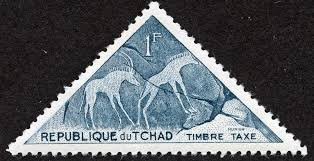 |
| Federal University of Agriculture, Abeokuta | 2015 Year of the Goat Lunar 10 Ounce Silver Bar 999 Fine – NTR (New) – STOCK – FUNAAB Zoo Park | 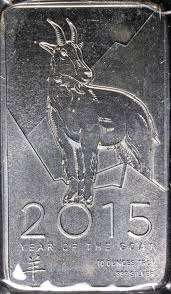 |
| eBay | VF (Very Fine) Mint Never Hinged/MNH South West African Postal Stamps (Pre - 1990) for sale | eBay | 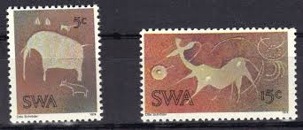 |
| Bomarka | Sheets "Petroglyphs of Saimalo-Tash" (Kyrgyzstan (KEP), 2021) | BOMARKA | 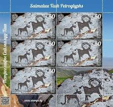 |
| Stamp Community Forum | Anthropology And Archaeology - Page 9 - Stamp Community Forum | 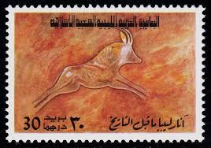 |
| postbeeld.com | Stamps with the theme Giraffe - PostBeeld - Online Stamp Shop - Collecting | 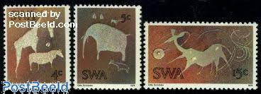 |
| Etsy | MONGOLIA 1993 DOMESTIC ANIMALS Imperforated Sheet.silver Stamp.service Organizations Stamp.mongolian Yurt.cat Stamp.dog Stamp.hare Stamp. - Etsy | 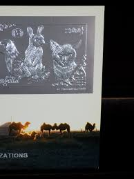 |
| eBay | Mongolia, 1993, Cats, Dogs, Animals, Fauna, Pets, Glossy Silver, Thin Paper, MNH | eBay | 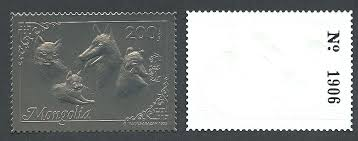 |
| brendanmanley.ca | Argentina 1989 Complete National Stamp Set MNH Argentina 1962-1966 Complete Stamp Set - Unmounted Mint Never Hinged MNH Collection Complete Stamp Set 1962-1966 | 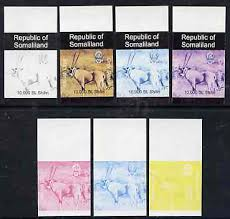 |
| lastdodo.com | Ram of Boualem 2.90 (1987) - Algeria - LastDodo | 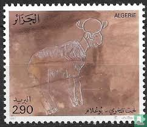 |
| Star and Stamp Store | South West Africa – Star and Stamp Store | 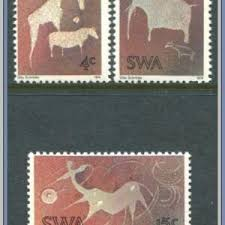 |
| Stamp Community Forum | Prehistoric Cave Paintings And Stone Carvings - Stamp Community Forum | 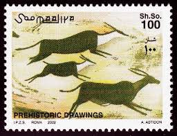 |
| eBay | E271 Southwest Africa 1974 archaeology Rock Carvings (cat. $9.25) MNH | eBay | 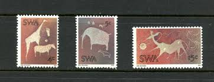 |
| World Stamp Company | Russia — Animals | 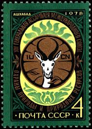 |
| europa.eu | Council of the European Union - PRADO - AGO-AO-01001 | 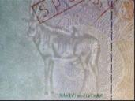 |
| eBay | SOUTH WEST AFRICA SC# 369 1974 15c CAVE ART USED OLD VINTAGE XF STAMP | eBay | 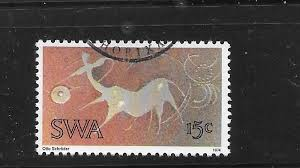 |
| Alamy | CHAD - CIRCA 1962: stamp printed by Chad, shows Tibesti Pictograph, Bull, circa 1962 Stock Photo - Alamy | 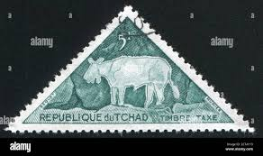 |
| ivex.ae | Deer 5 Ornament – IVEX | 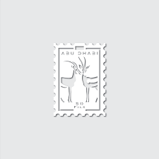 |
| Etsy | Christmas Card/ Holiday/reindeer/ Vintage Art Deco Reproduction / Boxed Set of 8 Notecards and Envelopes - Etsy Ireland | 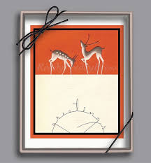 |
| HipStamp | Stamps Are Friends / HipStamp | 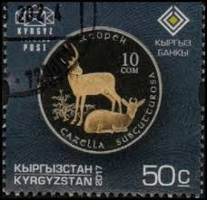 |
| eBay | First Day of Issue Spanish Moroccan Stamps for sale | eBay | 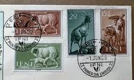 |
| eBay | Soccer Block Congolese Stamps for sale | eBay | 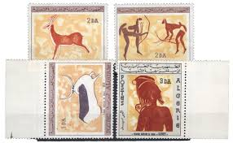 |
| Todocolección | somalia 2001 sheet mnh jack lemmon actores cine - Buy Stamps from other African countries on todocoleccion | 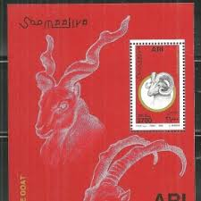 |
| eBay | SL) MÉXICO MUSEO DE LA FILATELIA MNH | eBay | 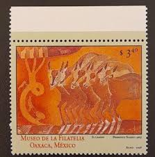 |
| lastdodo.com | Stamps from Western Sahara - Illegal Stamps Stamp catalogue - LastDodo | 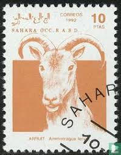 |
| eBay | Fujeira In United Arab Emirates Stamps for sale | eBay | 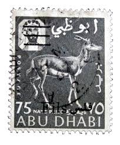 |
| eBay UK | Deer Single Postal Stamps for sale | eBay UK | 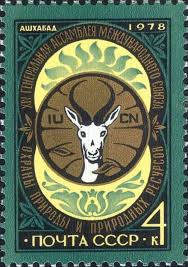 |
| Wikimedia.org | File:1978 SU stamp-01-001.jpg - Wikimedia Commons | 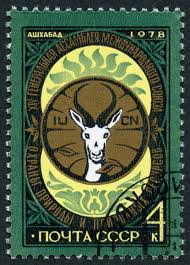 |
| 63 UAE: The Archives ideas | dubai 1990, dubai 1975, uae history | 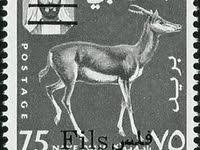 | |
| Blogger.com | Commonwealth Stamps Opinion: 1615. 🇿🇦 South Africa Commemorates Inauguration Of President Ramaphosa. | 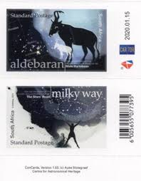 |
| eBay | US BOOKLET # BK142 "American Bighorned Sheep" MNH F-VF Never Opened | eBay | 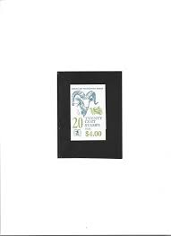 |
| eBay | AOP) Greenland 1980 cinderella full sheet of 50 DEER | eBay | 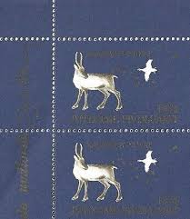 |
| eBay | Algeria 467/70 Mint / Felszeichnungen 2/4583 | eBay | 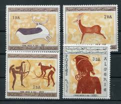 |
| Philatelic Federation of South Africa | KEEPING IN TOUCH | 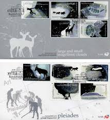 |
| eBay | CENTRAL AFRICA 2014 LUNAR NEW YEAR OF THE RAM SHEET MINT NH | eBay | 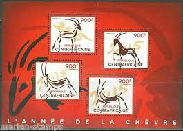 |
| eBay | THE SILVER JUBILEE OF THE QUEEN'S ACCESSION w/mint set of 4 stamps | eBay | 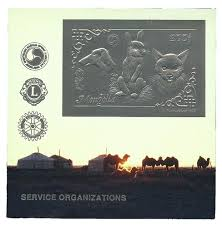 |
| Numista | 20 Cents (Richtersveld Transfrontier Peace Park) - South Africa – Numista | 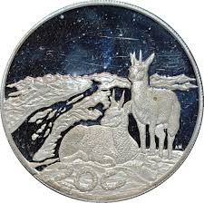 |
| eBay | Original Gum United States 20 Cent Denomination Stamps for sale | eBay | 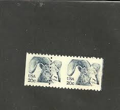 |
| On the Ridge Stamps | Products – On the Ridge Stamps | 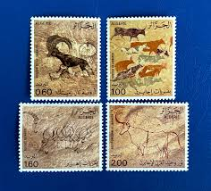 |
| eBay | Kruger National Park | eBay | 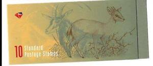 |
| Stamp Community Forum | Anthropology And Archaeology - Page 6 - Stamp Community Forum | 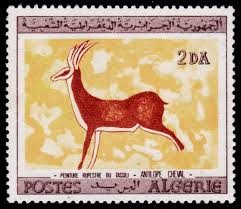 |
| eBay | Russian Rodents Wild Animal Postal Stamps for sale | eBay | 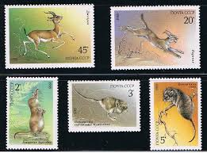 |
| Rhodesian Study Circle | 1966 RHODESIA DEFINITIVE ISSUE (HARRISON) | 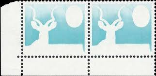 |
| eBay | Stamps Of Algeria N°437/440 Rupestrian Drawings Of The Tassili Mint ** Luxe MNH | eBay | |
| Shutterstock | Sahara Circa 1992 Cancelled Postage Stamp Stock Photo 2701541783 | Shutterstock | |
| eBay | Algeria 1966 SC 344-7 MNH (1gdm) | eBay | |
| Numista | 10 Yuan (Year of the Goat) - People's Republic of China – Numista | |
| eBay | Full Sheet Omani Stamps for sale | eBay | |
| Maps on Stamps | Maps on Stamps : Somalia | A Database of Cartophilately | |
| Dreamstime.com | Stamp Printed in USSR Shows XIV the General Assembly of the International Union for Conservation of Nature and Natural Editorial Stock Photo - Image of international, animal: 223848693 | |
| The Independent | Tip leads South African police to $2 million stolen artworks hidden in cemetery | The Independent | The Independent | |
| Etsy | Christmas Card/ Holiday/reindeer/ Vintage Art Deco Reproduction / Boxed Set of 8 Notecards and Envelopes - Etsy | |
| vikingsword.com | pls help identify this kattar - Ethnographic Arms & Armour | |
| Etsy | Small Art for 9.00, Each One Different - Etsy |
{kind=link}